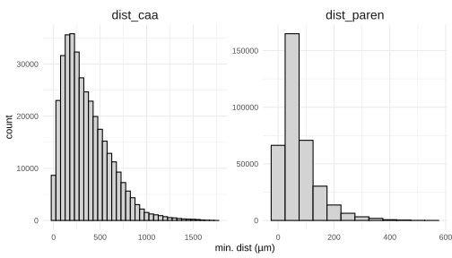

Code
source("R/setup.R")
library(compareGroups)
data <- load_slides_and_distances("full")
slide1 <- data$slide1; slide2 <- data$slide2
cell_distances_1 <- data$distances_1; cell_distances_2 <- data$distances_2ThioS quantification and HALO analysis
March 22, 2026
All annotations performed by Akhil Palleria (single annotator; no inter-observer variability).
Thioflavin-S (ThioS)-positive amyloid plaques were quantified across six brain samples (Brain1–6; IgG control, n=3; Aducanumab-treated, n=3) using HALO image analysis software, with all annotations performed by a single rater (A.P.) to eliminate inter-observer variability.
Two plaque phenotypes were identified: cerebrovascular (CAA) and parenchymal plaques. Across all brains, parenchymal plaques were substantially more numerous than CAA plaques, with per-brain counts ranging from 2,681 to 3,961 (parenchymal) versus 284 to 446 (CAA). Consistent with this, parenchymal plaques accounted for the majority of total annotated area in every sample.
| brain | sample | plaque_type | n_plaques | total_area |
|---|---|---|---|---|
| Brain1 | KK4_465 | CAA | 345 | 37005.25 |
| Brain1 | KK4_465 | Parenchymal | 3961 | 417446.50 |
| Brain2 | KK4_492 | CAA | 446 | 58097.50 |
| Brain2 | KK4_492 | Parenchymal | 2681 | 512135.00 |
| Brain3 | KK4_504 | CAA | 366 | 46653.50 |
| Brain3 | KK4_504 | Parenchymal | 2760 | 338232.25 |
| brain4 | KK4_496 | CAA | 389 | 35432.25 |
| brain4 | KK4_496 | Parenchymal | 3559 | 367226.00 |
| brain5 | KK4_502 | CAA | 370 | 44558.75 |
| brain5 | KK4_502 | Parenchymal | 3187 | 441707.00 |
| brain6 | KK4_464 | CAA | 284 | 22620.00 |
| brain6 | KK4_464 | Parenchymal | 2743 | 276220.25 |
Group-level comparison revealed no statistically significant difference between Aducanumab-treated and IgG-control animals in either total CAA area (41,759 ± 17,904 vs. 39,697 ± 6,076 µm²; p=0.865), total parenchymal plaque area (410,021 ± 121,107 vs. 374,302 ± 40,078 µm²; p=0.668), or the proportion of total plaque burden attributable to CAA (8.97 ± 1.32% vs. 9.69 ± 2.13%; p=0.653).
t1_wide <- t1 |>
pivot_wider(id_cols = c(brain, sample), names_from = plaque_type, values_from = total_area) |>
mutate(CAA_percent = CAA / (Parenchymal + CAA) * 100) |>
inner_join(sample_dict, by = c("brain", "sample"))
caa1 <- compareGroups(treatment ~ CAA + Parenchymal + CAA_percent, data = t1_wide)
export2md(createTable(caa1, show.p.overall = T), caption = "")| Adu | IgG | p.overall | |
|---|---|---|---|
| N=3 | N=3 | ||
| CAA | 41759 (17904) | 39697 (6076) | 0.865 |
| Parenchymal | 410021 (121107) | 374302 (40078) | 0.668 |
| CAA_percent | 8.97 (1.32) | 9.69 (2.13) | 0.653 |
To enable spatial co-registration with single-cell Xenium transcriptomic data, the centroid of each plaque was computed as the midpoint of the HALO bounding box and converted from pixel coordinates to micrometres using a calibration factor of 0.2125 µm/pixel. This coordinate transformation provides a common spatial reference frame for subsequent nearest-neighbour analyses.
Centroid and distance functions are defined in R/setup.R and computed by load_slides_and_distances().
Minimum Euclidean distances from each Xenium-profiled cell to its nearest CAA plaque (dist_caa) and nearest parenchymal plaque (dist_paren) were computed using a k-d tree algorithm. The resulting distance distributions were markedly different between plaque types. For CAA plaques, the distribution had a modal distance of approximately 200–300 µm and a long tail extending to ~1,500 µm, reflecting the relatively sparse and focal distribution of vascular amyloid deposits. By contrast, the majority of cells were within ~50 µm of a parenchymal plaque, consistent with the dense and spatially pervasive distribution of diffuse parenchymal amyloid observed histologically.
bind_rows(cell_distances_1, cell_distances_2) |>
pivot_longer(c(dist_caa, dist_paren), names_to = "plaque_type", values_to = "min_dist") |>
ggplot(aes(x = min_dist)) +
geom_histogram(binwidth = 50, fill = "lightgray", col = "black") +
labs(x = "min. dist (µm)") +
facet_wrap(~plaque_type, scales = "free") +
theme_minimal() +
theme(strip.text = element_text(size = 14))
Each cell was assigned to either the CAA or parenchymal plaque neighbourhood based on which plaque type was spatially closer.
Across the six samples (n = 51,959–69,664 cells per brain), the large majority of cells were classified as parenchymal-proximal (87.5–92.9% per sample), with 7.4–12.5% classified as CAA-proximal, broadly reflecting the disparity in plaque abundance between types. Between 4.1–6.6% of cells per sample fell within the 50 µm CAA proximity threshold, while 38.5–52.2% of cells were within 50 µm of a parenchymal plaque.
Each cell is assigned to whichever plaque type is nearest: CAA if dist_caa < dist_paren, Parenchymal otherwise.
classify_proximity <- function(dist_data) {
dist_data |>
column_to_rownames("cell") |>
mutate(
caa = case_when(
dist_caa < 50 ~ "<50um",
dist_caa >= 50 ~ "≥50um"),
parenchymal = case_when(
dist_paren < 50 ~ "<50um",
dist_paren >= 50 & dist_paren < 150 ~ "50-150um",
dist_paren >= 150 ~ "≥150um"),
classification = if_else(dist_caa < dist_paren, "CAA", "Parenchymal")
) |>
select(dist_caa:classification)
}
slide1 <- AddMetaData(slide1, classify_proximity(cell_distances_1))
slide2 <- AddMetaData(slide2, classify_proximity(cell_distances_2))| KK4_464 | KK4_465 | KK4_492 | KK4_496 | KK4_502 | KK4_504 | |
|---|---|---|---|---|---|---|
| N=58063 | N=65989 | N=69664 | N=58041 | N=51959 | N=54683 | |
| caa: | ||||||
| <50um | 2378 (4.10%) | 3181 (4.82%) | 3738 (5.37%) | 3283 (5.66%) | 2583 (4.97%) | 3607 (6.60%) |
| ≥50um | 55685 (95.9%) | 62808 (95.2%) | 65926 (94.6%) | 54758 (94.3%) | 49376 (95.0%) | 51076 (93.4%) |
| parenchymal: | ||||||
| <50um | 23579 (40.6%) | 34450 (52.2%) | 26807 (38.5%) | 28818 (49.7%) | 25923 (49.9%) | 22475 (41.1%) |
| ≥150um | 8188 (14.1%) | 4993 (7.57%) | 8891 (12.8%) | 3827 (6.59%) | 4134 (7.96%) | 8222 (15.0%) |
| 50-150um | 26296 (45.3%) | 26546 (40.2%) | 33966 (48.8%) | 25396 (43.8%) | 21902 (42.2%) | 23986 (43.9%) |
| classification: | ||||||
| CAA | 5657 (9.74%) | 4882 (7.40%) | 6834 (9.81%) | 5296 (9.12%) | 3702 (7.12%) | 6851 (12.5%) |
| Parenchymal | 52406 (90.3%) | 61107 (92.6%) | 62830 (90.2%) | 52745 (90.9%) | 48257 (92.9%) | 47832 (87.5%) |
| Adu | IgG | p.overall | |
|---|---|---|---|
| N=179686 | N=178713 | ||
| caa: | <0.001 | ||
| <50um | 8699 (4.84%) | 10071 (5.64%) | |
| ≥50um | 170987 (95.2%) | 168642 (94.4%) | |
| parenchymal: | <0.001 | ||
| <50um | 76309 (42.5%) | 85743 (48.0%) | |
| ≥150um | 21213 (11.8%) | 17042 (9.54%) | |
| 50-150um | 82164 (45.7%) | 75928 (42.5%) | |
| classification: | <0.001 | ||
| CAA | 16193 (9.01%) | 17029 (9.53%) | |
| Parenchymal | 163493 (91.0%) | 161684 (90.5%) |
Pseudoreplication warning: these cell-level statistics treat each cell as independent, but the true unit of replication is the brain (n = 3 per group). P-values are therefore inflated and should not be used for formal inference. See pseudobulk DE in notebooks 7 and 8 for properly replicated treatment comparisons.